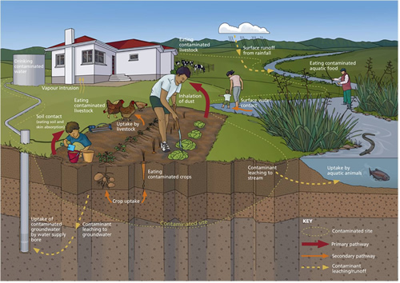

Contaminated land is defined under the RMA as land with hazardous substances in or on it that are reasonably likely to have significant adverse effects on the environment (including human health).
The full definition of contaminated land under section 2 of the RMA is:
"contaminated land means land that has a hazardous substance in or on it that.
1.has significant adverse effects on the environment.
2.is reasonably likely to have significant adverse effects on the environment."
Land can become contaminated when hazardous substances are not used, stored or disposed of in a safe way. Contamination is not always limited to a specific site. Hazardous substances may seep through the soil into groundwater, or be carried to nearby land and waterways in rainwater or as dust. Hazardous gases can also pollute the air.
The different pathways by which humans can be exposed to contaminants in soil are shown in the diagram below.
This diagram shows the main pathways by which contaminants in soil can affect human health. The diagram depicts a rural residential setting with a house and home garden connected to roof water and groundwater supplies.
Cows are fenced behind the house and chickens are scratching and pecking in the garden. Adjacent to the house is a stream containing trout and eels. The house, garden, cows and chickens are shown located on contaminated soil.
Arrows show the pathways by which contaminants in soil can expose the human receptors directly or indirectly through food, air, soil and water. The human receptors in this diagram are a father and son in the garden, a mother and child wading in the stream, and an angler on the stream bank. The arrows describe the pathways as follows:
1.Primary pathways
a.Inhalation of dust
b.Soil contact (eating and skin absorption)
2.Secondary pathways
a.Crop uptake and eating of contaminated crops
b.Uptake by livestock and eating contaminated livestock
c.Surface water contact
3.Contaminant leaching/runoff pathways
a.Contaminant leaching to groundwater, uptake of contaminated groundwater by water supply bore, and drinking of contaminated water
b.Surface runoff from rainfall, uptake by aquatic animals, and eating of aquatic animals and surface water contact
c.Contaminant leaching to stream, uptake by aquatic animals, and eating of aquatic animals and surface water contact
The past use of hazardous substances in industry, agriculture and horticulture has left a legacy of soil contamination in New Zealand. This contamination has been mainly caused by past practices in which chemicals were used, stored and disposed of in a way that is not safe by today standards
Contaminated sites are commonly associated with past activities such as:
1.Manufacture and use of pesticides these activities have resulted in contamination at locations where pesticides were manufactured as well as the wider contamination associated with the use of the chemicals (eg, agrichemical sprays)
2.Production of gas and coal products includes old gasworks sites located in most towns and cities.